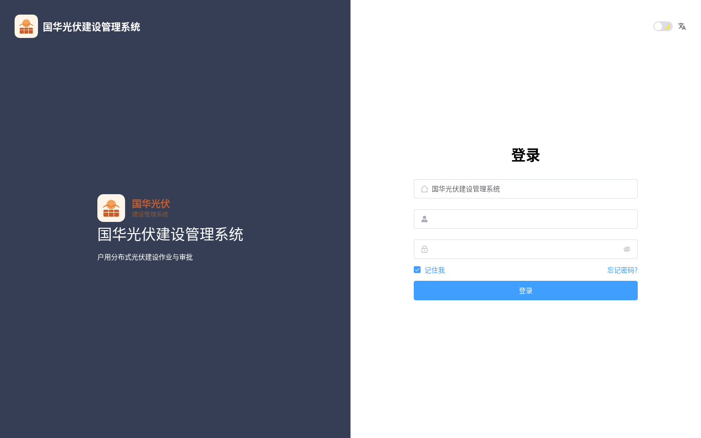
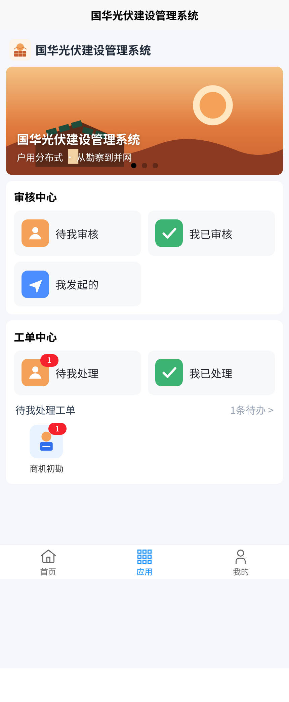
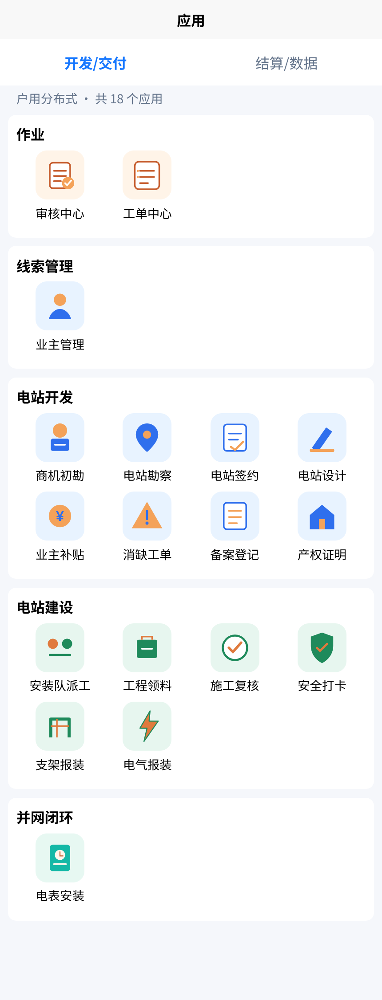

登录与两端
国华光伏建设管理系统有两个使用入口：电脑端和现场端（H5，也可编译成微信小程序）。两端使用同一套账号和数据。
打开地址并登录
- 用浏览器打开电脑端 https://admin.yuhuisoft.cn/，或用手机打开现场端 https://h5.yuhuisoft.cn/。原先的服务器地址和现场端路径会自动跳转到对应的新域名。
- 租户填写或选择 国华光伏建设管理系统。
- 用公司分配的账号和密码登录。请使用与本人职责相符的账号，以便看到对应的菜单和电站范围。
也可以用手机扫描下面的二维码进入对应入口。



图：电脑端登录页。租户请填写「国华光伏建设管理系统」。

图：现场端登录页。
电脑端登录页上即使出现「手机登录」「二维码登录」「注册」入口，目前也不可作为正式登录方式使用。短信验证码登录尚未开放。
电脑端首页
登录电脑端后，左侧是功能菜单，中间首页按模块排列入口，包括审核中心、工单中心、业主管理，以及电站开发、电站建设中的各业务模块和电站查询。模块图标与现场端应用宫格是同一套。

图：电脑端首页模块入口。
审核员、管理员、项目经理和仓储主要在电脑端工作。也可以从左侧菜单进入「开发/交付」「结算/数据」「系统管理」等分组。
现场端首页与应用
登录现场端后，底部有「首页」「应用」「我的」三个标签。
- 首页：上方是审核中心（待我审核、我已审核、我发起的），下方是工单中心（待我处理、我已处理），并可能列出待办工单。
- 应用：业务入口集中在这里，分为「开发/交付」和「结算/数据」。本说明涉及的主流程都在「开发/交付」下，并按作业、线索管理、电站开发、电站建设、并网闭环分组。
- 我的：显示系统名称与标志、当前用户信息，并提供退出登录等入口。

图：现场端首页。

图：现场端「应用」页。审核中心和工单中心可以从宫格进入，也可以从首页进入。
现场端应用入口会按角色显示。例如开发经理通常没有勘察、领料、派工入口；现勘员没有初勘、派工入口；安装队负责人没有商机初勘入口。具体以登录后实际看到的宫格为准。
建档和备货一般不出现在应用宫格里，而是从电站详情的「发货信息」进入办理。派工查询在安装队派工相关页签中，也不单独占据宫格。
列表页的共同用法
多数业务列表都有状态页签、搜索框和漏斗筛选。
- 页签旁的数字角标与页签名称一致，例如支架、电气的「待报装」，电表的「待安装」。角标为该状态下的单据数量。
- 顶部一次只能显示前几个页签时，可点右侧箭头展开全部页签。
- 在搜索框输入电站编号、业主姓名或手机号后点「搜索」。点漏斗打开高级筛选，填写条件后点「搜索」，列表只会显示符合条件的单据；点「重置」可清空条件。
- 没有写权限，或单据已进入只读状态时，只能查看详情，不能保存或提交。
状态颜色约定：待提交等办理中的状态为橙色，已完成为绿色，审核驳回为橙色。关闭、作废等结束态一般用灰色。
部分列表页可以在同一页内切换业务类型，标题会随列表一起变化。请以当前页标题为准，不要沿用刚才查看的上一个模块名称。